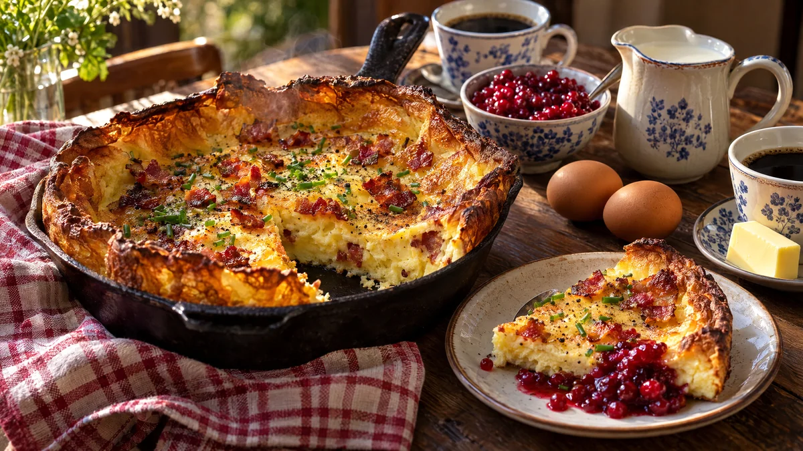

RESTFEST · RECEPTHuvudrätt · Frukost & brunch
Ugnspannkaka med krispigt bacon och rårörda lingon
Mjölk, ägg, mjöl och ett paket bacon. Smeten hälls i en rykande het gjutjärnspanna och reser sig i ugnen till en gyllene pannkaka med höga, frasiga kanter och knaprigt bacon inbakat. Den bärs ut direkt i pannan och serveras med glänsande lingon. Mormors fläskpannkaka i söndagskläder.
- Förberedelse
- 10 min
- Tillagning
- 35 min
- Portioner
- 4
- Nivå
- Nybörjare
 Det här behöver du
Det här behöver du
JÄMFÖRT MED DIN KYL
Tryck på + vid det du behöver köpa.
Pannkaka
Till servering
Gör så här
- Sätt ugnen på 225 grader.
- Vispa mjöl, salt och hälften av mjölken till en slät smet. Vispa i resten av mjölken och äggen. Smeten blir klumpfri om mjölet först blandas med lite av mjölken. Låt smeten vila medan du steker baconet.
- Skär baconet i bitar, ca 2 cm. Stek dem i en stor gjutjärnspanna (ca 30 cm) på medelvärme i 5–6 minuter, tills de är gyllene men inte helt krispiga. De steker klart i ugnen. Saknar du gjutjärnspanna, använd en ugnsform på ca 25 × 35 cm.
- Lyft upp hälften av baconet. Låt resten och fettet ligga kvar, lägg i smöret och ställ in pannan i ugnen i 5 minuter, så att den blir riktigt het.
- Vispa smeten snabbt och häll den i den heta pannan. Strö över det upplyfta baconet.
- Grädda i mitten av ugnen i 25–30 minuter, tills pannkakan har rest sig, är gyllenbrun och har stannat i mitten. Öppna inte ugnsluckan de första 20 minuterna.
Dekoration och servering
- Bär ut pannkakan direkt, medan kanterna står höga. Den sjunker ihop efter några minuter.
- Ställ pannan på en träbricka mitt på bordet, så att alla ser de krispiga kanterna.
- Strö över gräslök och nymald svartpeppar.
- Skär i stora tårtbitar och servera med rårörda lingon i en skål bredvid.
- För en vegetarisk variant, byt baconet mot 200 g skivade champinjoner som stekts gyllene i smör.
Mått och ugnstemperaturer
Måtten är svenska (dl, msk, tsk, krm). Ugnstemperaturerna gäller vanlig ugn med över- och undervärme; med varmluft, sänk med 20 grader.